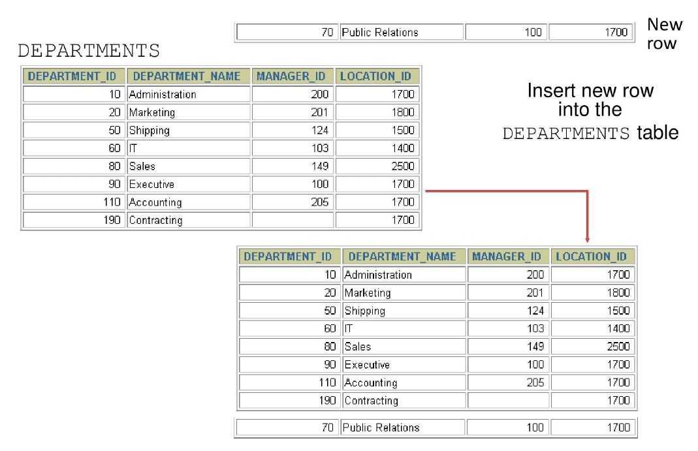
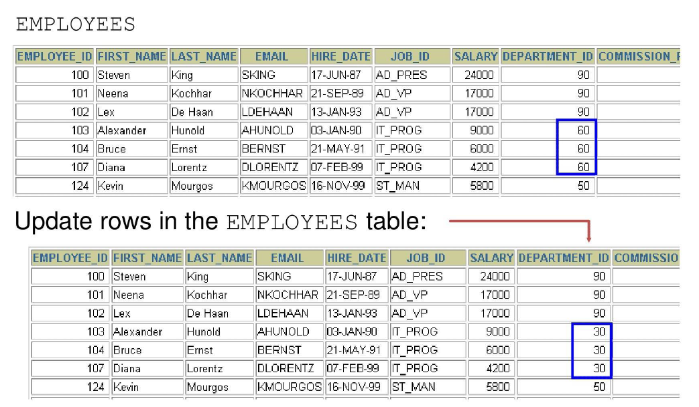
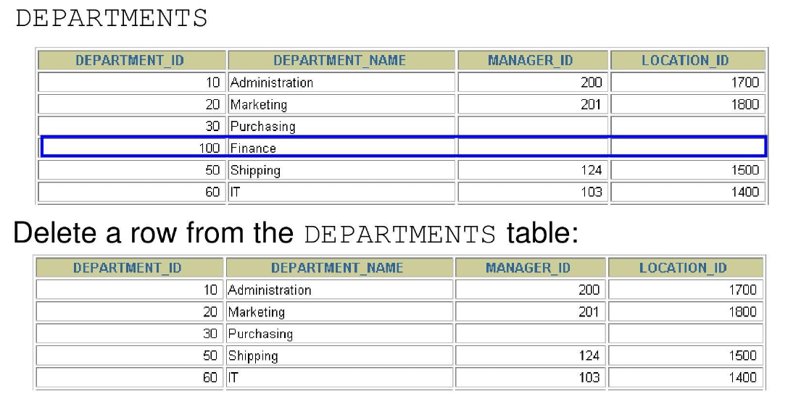
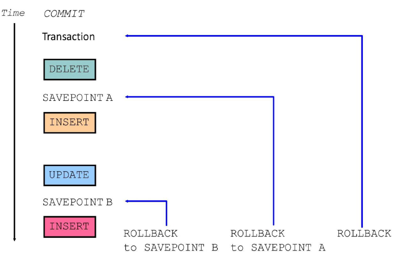
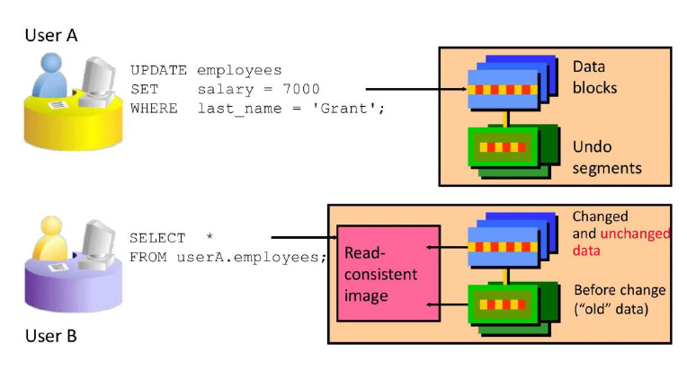
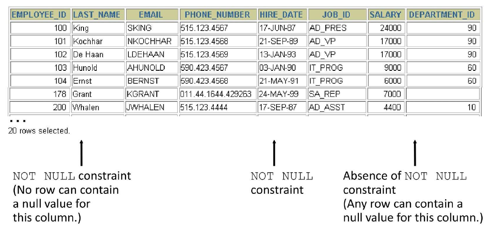
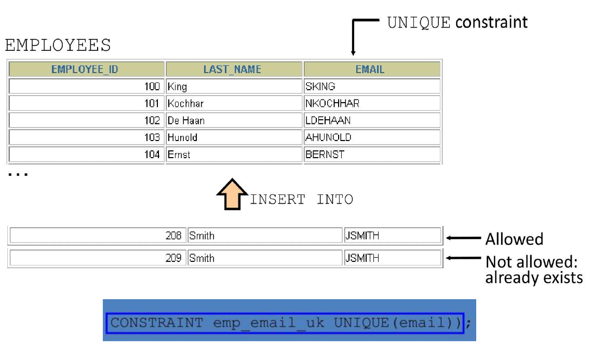
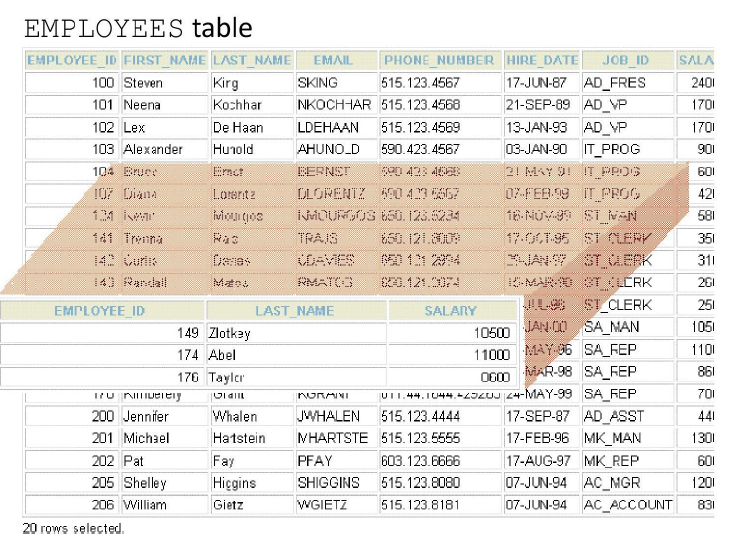
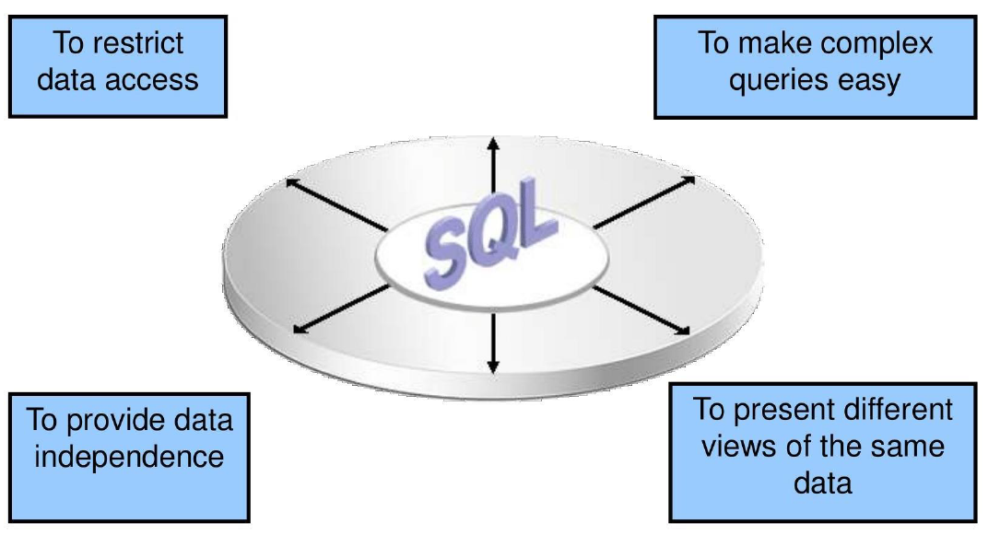

Multiple-Column Subqueries
Main query
WHERE (MANAGER_ID, DEPARTMENT_ID) IN
┌─────────────────────┐
│ Subquery │
│ 100 90 │
│ 102 60 │
│ 124 50 │
└─────────────────────┘
Each row of the main query is compared to values from a multiple-row and multiple-column subquery.
Pairwise Comparison Subquery
Display the details of the employees who are managed by the same manager and work in the same department as the employees with EMPLOYEE_ID 199 or 174.
SELECT employee_id, manager_id, department_id
FROM employees
WHERE (manager_id, department_id) IN
(SELECT manager_id, department_id
FROM employees
WHERE employee_id IN (199, 174))
AND employee_id NOT IN (199, 174);
Nonpairwise Comparison Subquery
Display the details of the employees who are managed by the same manager as the employees with EMPLOYEE_ID 174 or 199 and work in the same department as the employees with EMPLOYEE_ID 174 or 199.
SELECT employee_id, manager_id, department_id
FROM employees
WHERE manager_id IN
(SELECT manager_id
FROM employees
WHERE employee_id IN (174, 199))
AND department_id IN
(SELECT department_id
FROM employees
WHERE employee_id IN (174, 199))
AND employee_id NOT IN (174, 199);
Scalar Subquery Expressions
- A scalar subquery expression is a subquery that returns exactly one column value from one row.
- Scalar subqueries can be used in:
- Condition and expression parts of
DECODEandCASE - All clauses of a
SELECTstatement exceptGROUP BY
- Condition and expression parts of
Scalar Subqueries Examples
Scalar Subqueries in CASE Expressions
SELECT employee_id, last_name,
(CASE
WHEN department_id =
(SELECT department_id
FROM departments
WHERE location_id = 1800)
THEN 'Canada' ELSE 'USA'
END) location
FROM employees;
Scalar subqueries in ORDER BY clause
SELECT employee_id, last_name
FROM employees e
ORDER BY (SELECT department_name
FROM departments d
WHERE e.department_id = d.department_id);
Correlated Subqueries
- Correlated subqueries are used for row-by-row processing.
- Each subquery is executed once for every row of the outer query.
- The inner query references columns from the outer query (making it "correlated").
GET candidate row from outer query ↓ EXECUTE inner query using candidate row value ↓ USE values from inner query to qualify or disqualify candidate row
The subquery references a column from a table in the parent (outer) query.
SELECT column1, column2, ...
FROM table1 outer
WHERE column1 operator
(SELECT column1, column2
FROM table2
WHERE expr1 = outer.expr2);
Find all employees who earn more than the average salary in their department.
SELECT last_name, salary, department_id
FROM employees outer
WHERE salary >
(SELECT AVG(salary)
FROM employees
WHERE department_id = outer.department_id);
Each time a row from the outer query is processed, the inner query is evaluated.
Correlated Subquery Example
Display details of those employees who have changed jobs at least twice.
SELECT e.employee_id, e.last_name, e.job_id
FROM employees e
WHERE 2 <= (
SELECT COUNT(*)
FROM job_history
WHERE employee_id = e.employee_id
);
| EMPLOYEE_ID | LAST_NAME | JOB_ID |
|---|---|---|
| 101 | Kochar | AD_VP |
| 176 | Taylor | SA_REP |
| 200 | Whalen | AD_ASST |
Using the EXISTS Operator
- The EXISTS operator tests for the existence of rows in the result set of the subquery.
- It returns TRUE if the subquery returns at least one row, FALSE otherwise.
- NOT EXISTS does the opposite.
If a subquery row value is found:
- The search does not continue in the inner query (short-circuits after first match).
- The condition is flagged TRUE.
If a subquery row value is not found:
- The condition is flagged FALSE.
- The search continues in the inner query until all rows are checked or a match is found.
Find Employees Who Have at Least One Person Reporting to Them
SELECT employee_id, last_name, job_id, department_id
FROM employees outer
WHERE EXISTS (
SELECT 'X'
FROM employees
WHERE manager_id = outer.employee_id
);
| EMPLOYEE_ID | LAST_NAME | JOB_ID | DEPARTMENT_ID |
|---|---|---|---|
| 100 | King | AD_PRES | 90 |
| 101 | Kochhar | AD_VP | 90 |
| 102 | De Haan | AD_VP | 90 |
| 103 | Hunold | IT_PROG | 60 |
| 108 | Greenberg | FI_MGR | 100 |
| 114 | Raphaely | PU_MAN | 30 |
| 120 | Weiss | ST_MAN | 50 |
| 121 | Fripp | ST_MAN | 50 |
| 122 | Kaufling | ST_MAN | 50 |
Find All Departments That Do Not Have Any Employees
SELECT department_id, department_name
FROM departments d
WHERE NOT EXISTS (
SELECT 'X'
FROM employees
WHERE department_id = d.department_id
);
| DEPARTMENT_ID | DEPARTMENT_NAME |
|---|---|
| 120 | Treasury |
| 130 | Corporate Tax |
| 140 | Control And Credit |
| 150 | Shareholder Services |
| 160 | Benefits |
| 170 | Manufacturing |
The WITH Clause
- Using the WITH clause, you can use the same query block in a
SELECTstatement when it occurs more than once within a complex query. - The WITH clause retrieves the results of a query block and stores it in the user's temporary tablespace.
- The WITH clause improves performance by avoiding repeated execution of the same subquery.
WITH Clause Example
Using the WITH clause, write a query to display the department name and total salaries for those departments whose total salary is greater than the average salary across departments.
WITH
dept_costs AS (
SELECT d.department_name, SUM(e.salary) AS dept_total
FROM employees e
JOIN departments d ON e.department_id = d.department_id
GROUP BY d.department_name
),
avg_cost AS (
SELECT SUM(dept_total)/COUNT(*) AS dept_avg
FROM dept_costs
)
SELECT *
FROM dept_costs
WHERE dept_total >
(SELECT dept_avg
FROM avg_cost)
ORDER BY department_name;
Data Manipulation Language (DML) in SQL
-
A DML statement is executed when you:
- Add new rows to a table
- Modify existing rows in a table
- Remove existing rows from a table
-
A transaction consists of a collection of DML statements that form a logical unit of work.
Adding a New Row to a Table

INSERT Statement Syntax
- Add new rows to a table by using the INSERT statement.
With this syntax, only one row is inserted at a time.
Inserting New Rows
- Insert a new row containing values for each column.
- List values in the default order of the columns in the table.
- Optionally, list the columns explicitly in the
INSERTclause. - Enclose character and date values in single quotation marks.
INSERT INTO departments (department_id, department_name, manager_id, location_id)
VALUES (70, 'Public Relations', 100, 1700);
Inserting Rows with NULL Values
Implicit Method
- Omit the column from the column list.
- The omitted column(s) will receive NULL (or default value if defined).
Explicit Method
- Specify the NULL keyword in the VALUES clause.
Copying Rows from Another Table
- Write your INSERT statement with a subquery.
- Do not use the
VALUESclause. - Match the number of columns in the
INSERTclause to those in the subquery.
INSERT INTO target_table [(column1, column2, ...)]
SELECT column1, column2, ...
FROM source_table
[WHERE condition];
Changing Data in a Table

UPDATE Statement Syntax in Oracle SQL
- Modify existing rows with the UPDATE statement.
-
Update more than one row at a time (if required).
-
Specific row or rows are modified if you specify the WHERE clause.
- All rows in the table are modified if you omit the WHERE clause.
Updating Two Columns with a Subquery
Update employee 114's job and salary to match that of employee 205.
UPDATE employees
SET job_id = (SELECT job_id
FROM employees
WHERE employee_id = 205),
salary = (SELECT salary
FROM employees
WHERE employee_id = 205)
WHERE employee_id = 114;
Removing a Row from a Table

DELETE Statement in Oracle SQL
- You can remove existing rows from a table by using the DELETE statement.
- Specific rows are deleted if you specify the WHERE clause.
- All rows in the table are deleted if you omit the WHERE clause.
Deleting Rows Based on Another Table
- Use subqueries in
DELETEstatements to remove rows from a table based on values from another table.
DELETE FROM employees
WHERE department_id =
(SELECT department_id
FROM departments
WHERE department_name LIKE '%Public%');
TRUNCATE Statement in Oracle SQL
- Removes all rows from a table, leaving the table empty and the table structure intact.
- Is a data definition language (DDL) statement rather than a DML statement.
- Cannot easily be undone (implicit commit — no ROLLBACK possible).
Example:
Using a Subquery in an INSERT Statement
INSERT INTO
(SELECT employee_id, last_name, email, hire_date, job_id, salary, department_id
FROM employees
WHERE department_id = 50)
VALUES (99999, 'Taylor', 'DTAYLOR',
TO_DATE('07-Jun-99', 'DD-MON-RR'),
'ST_CLERK', 5000, 50);
Verify the results:

Database Transactions
- A database transaction consists of one of the following:
- DML statements that constitute one consistent change to the data
- One DDL statement
- One data control language (DCL) statement
Database Transactions
- Begins when the first DML SQL statement is executed.
- A transaction ends with one of the following events:
- A COMMIT or ROLLBACK statement is issued.
- A DDL or DCL statement executes (automatic commit).
- The user exits SQL*Developer (or tool) normally (implicit commit in many tools).
- The system crashes (changes lost — rollback on restart).
Advantages of COMMIT and ROLLBACK Statements
With COMMIT and ROLLBACK statements, you can:
- **Ensure data consistency**
All changes in a transaction succeed together or are undone completely (atomicity).
- **Preview data changes before making changes permanent**
Execute DML statements, query the results, and decide whether to commit or rollback.
- **Group logically related operations**
Treat multiple DML statements as a single logical unit of work.
Controlling Transactions

Rolling Back Changes to a Marker
- Create a marker in a current transaction by using the SAVEPOINT statement.
- Roll back to that marker by using the ROLLBACK TO SAVEPOINT statement.

Implicit Transaction Processing
-
An automatic commit occurs under the following circumstances:
- DDL statement is issued
- DCL statement is issued
- Normal exit from SQL Developer, without explicitly issuing COMMIT or ROLLBACK statements
-
An automatic rollback occurs under an abnormal termination of SQL Developer or a system failure.
State of the Data Before COMMIT or ROLLBACK
- The previous state of the data can be recovered.
- The current user can review the results of the DML operations by using the SELECT statement.
- Other users cannot view the results of the DML statements by the current user.
- The affected rows are locked; other users cannot change the data in the affected rows.
State of the Data After COMMIT
After issuing a COMMIT:
- Data changes are made permanent in the database.
- The previous state of the data is permanently lost.
- All users can view the results.
- Locks on the affected rows are released; those rows are available for other users to manipulate.
- All savepoints are erased.
Committing Data
Step 1: Make the Changes
DELETE FROM employees
WHERE employee_id = 99999;
INSERT INTO departments
VALUES (290, 'Corporate Tax', NULL, 1700);
Step 2: Commit the Changes
State of the Data After ROLLBACK
- Discard all pending changes by using the ROLLBACK statement:
- Data changes are undone.
- Previous state of the data is restored.
- Locks on the affected rows are released.
State of the Data After ROLLBACK
DELETE FROM test; -- ups!, it's a mistake
-- 25,000 rows deleted.
ROLLBACK; -- correct the mistake
-- Rollback complete.
DELETE FROM test WHERE id = 100; -- it's ok
-- 1 row deleted.
SELECT * FROM test WHERE id = 100;
-- No rows selected. (row successfully removed)
COMMIT; -- make it permanent
-- Commit complete.
Statement-Level Rollback
- If a single DML statement fails during execution, only that statement is rolled back.
- The Oracle server implements an implicit savepoint.
- All other changes (previous successful statements in the transaction) are retained.
- The user should terminate transactions explicitly by executing a COMMIT or ROLLBACK statement.
Read Consistency
- Read consistency guarantees a consistent view of the data at all times.
- Changes made by one user do not conflict with changes made by another user.
- Read consistency ensures that on the same data:
- Readers do not wait for writers
- Writers do not wait for readers

Database Objects
| Object | Description |
|---|---|
| Table | Basic unit of storage; composed of rows and columns |
| View | Logically represents subsets of data from one or more tables |
| Sequence | Generates numeric values (e.g., for auto-incrementing IDs) |
| Index | Improves the performance of some queries |
| Synonym | Gives alternative names to objects |
Naming Rules for Database Objects
- Must begin with a letter (A–Z or a–z).
- Must be 1–30 characters long (Oracle 12.2 and later: up to 128 bytes for most objects).
- Must contain only:
- Alphanumeric characters (A–Z, a–z, 0–9)
- Underscore (
_) - Dollar sign (
$) - Pound sign (
#)
- Must not duplicate the name of another object owned by the same user.
- Must not be an Oracle server reserved word (e.g., SELECT, TABLE, FROM).
CREATE TABLE Statement
You must have:
- CREATE TABLE privilege
- A storage area (quota in a tablespace)
What You Specify - Table name - Column name, column data type, and column size
Referencing Another User's Tables
- Tables belonging to other users are not in the user's schema.
- You should use the owner's name as a prefix to those tables.
This is called schema-qualified table reference.
DEFAULT Option
- Specify a default value for a column during an INSERT.
- If no value is provided for the column in the INSERT, the default is used automatically.
- Literal values, expressions, or SQL functions are legal values.
- Another column's name or a pseudocolumn are illegal values.
- The default data type must match the column data type (Oracle performs implicit conversion if possible).
Creating Tables
Create the Table
CREATE TABLE dept
(deptno NUMBER(2),
dname VARCHAR2(14),
loc VARCHAR2(13),
create_date DATE DEFAULT SYSDATE);
Confirm Table Creation

Data Types
Oracle provides a variety of data types to store different kinds of information efficiently.
| Data Type | Description |
|---|---|
| VARCHAR2(size) | Variable-length character data (up to 4000 bytes; size in bytes or characters) |
| CHAR(size) | Fixed-length character data (padded with spaces; up to 2000 bytes) |
| NUMBER(p, s) | Variable-length numeric data (p = precision, s = scale) |
| DATE | Date and time values (century to seconds) |
| LONG | Variable-length character data (up to 2 GB) — deprecated |
| CLOB | Character large object (up to 4 GB) |
| RAW and LONG RAW | Raw binary data (deprecated) |
| BLOB | Binary large object (up to 4 GB) |
| BFILE | Binary data stored in an external file (up to 4 GB) |
| ROWID | A base-64 number system representing the unique address of a row in its table |
Date and Interval Types
| Data Type | Description |
|---|---|
| TIMESTAMP | Date with fractional seconds |
| INTERVAL YEAR TO MONTH | Stored as an interval of years and months |
| INTERVAL DAY TO SECOND | Stored as an interval of days, hours, minutes, and seconds |
Datetime Data Types
- The TIMESTAMP data type is an extension of the DATE data type.
- It stores the year, month, and day of the DATE data type plus hour, minute, and second values as well as the fractional second value.
- You can optionally specify the time zone.
| Data Type | Description |
|---|---|
| TIMESTAMP [(fractional_seconds_precision)] | Stores date, time, and fractional seconds (precision 0–9, default 6) |
| TIMESTAMP [(fractional_seconds_precision)] WITH TIME ZONE | Includes time zone offset (e.g., +05:30) or time zone region name |
| TIMESTAMP [(fractional_seconds_precision)] WITH LOCAL TIME ZONE | Stores in database time zone, automatically converts to user’s local time zone on retrieval |
Interval Data Types
Oracle provides interval data types to store periods of time.
INTERVAL YEAR TO MONTH
- Stores a period of time using the YEAR and MONTH datetime fields.
INTERVAL DAY TO SECOND
- Stores a period of time in terms of days, hours, minutes, and seconds.
Including Constraints
- Constraints enforce rules at the table level.
- Constraints prevent the deletion of a table if there are dependencies.
- They ensure data integrity by restricting what data can be inserted, updated, or deleted.
Valid Constraint Types
| Constraint Type | Description | Example Use Case |
|---|---|---|
| NOT NULL | Column cannot contain NULL values | email, last_name |
| UNIQUE | All values in the column (or combination) must be unique | employee_id (if not PK), email |
| PRIMARY KEY | Combines NOT NULL + UNIQUE; uniquely identifies each row | employee_id, dept_id |
| FOREIGN KEY | Enforces referential integrity — value must exist in referenced table/key | department_id references departments(dept_id) |
| CHECK | Ensures column value satisfies a specific condition | salary > 0, job_id IN ('SA_REP','IT_PROG') |
Constraint Guidelines
- You can name a constraint, or the Oracle server generates a name by using the SYS_Cn format.
- Create a constraint at either of the following times:
- At the same time as the table is created
- After the table has been created
- Define a constraint at the column or table level.
- View a constraint in the data dictionary.
Defining Constraints
CREATE TABLE [schema.]table
(
column datatype [DEFAULT expr]
[column_constraint],
...
[table_constraint] [, ...]
);
Column-Level Constraint
CREATE TABLE employees (
employee_id NUMBER(6)
CONSTRAINT emp_emp_id_pk PRIMARY KEY,
first_name VARCHAR2(20),
...
);
Table-Level Constraint
CREATE TABLE employees (
employee_id NUMBER(6),
first_name VARCHAR2(20),
...
job_id VARCHAR2(10) NOT NULL,
CONSTRAINT emp_emp_id_pk PRIMARY KEY (employee_id)
);
NOT NULL Constraint
- Ensures that null values are not permitted for the column.

UNIQUE Constraint

PRIMARY KEY Constraint

FOREIGN KEY Constraint

FOREIGN KEY Constraint: Keywords
- FOREIGN KEY: Defines the column in the child table at the table-constraint level
- REFERENCES: Identifies the table and column in the parent table
- ON DELETE CASCADE: Deletes the dependent rows in the child table when a row in the parent table is deleted
- ON DELETE SET NULL: Converts dependent foreign key values to null
CHECK Constraint
- Defines a condition that each row must satisfy
- The following expressions are not allowed:
- References to CURRVAL, NEXTVAL, LEVEL, and ROWNUM pseudocolumns
- Calls to SYSDATE, UID, USER, and USERENV functions
- Queries that refer to other values in other rows
Violating Constraints 1
UPDATE employees
*
ERROR at line 1:
ORA-02291: integrity constraint (HR.EMP_DEPT_FK)
violated - parent key not found
Department 55 does not exist.
Violating Constraints 2
- You cannot delete a row that contains a primary key that is used as a foreign key in
DELETE FROM departments
*
ERROR at line 1:
ORA-02292: integrity constraint (HR.EMP_DEPT_FK)
violated - child record found
Creating a Table by Using a Subquery
- Create a table and insert rows by combining the
CREATE TABLEstatement and theAS subqueryoption.
- Match the number of specified columns to the number of subquery columns.
- Define columns with column names and default values.
Creating a Table by Using a Subquery
CREATE TABLE dept80
AS
SELECT employee_id, last_name,
salary*12 ANNSAL,
hire_date
FROM employees
WHERE department_id = 80;
ALTER TABLE Statement
- Use the ALTER TABLE statement to:
- Add a new column
- Modify an existing column
- Define a default value for the new column
- Drop a column
Dropping a Table
- All data and structure in the table are deleted.
- Any pending transactions are committed.
- All indexes are dropped.
- All constraints are dropped.
- You cannot roll back the DROP TABLE statement.
What is a VIEW?

You can present logical subsets or combinations of data by creating views of tables.
A view is a logical table based on a table or another view.
A view contains no data of its own but is like a window through which data from tables can be viewed or changed.
The tables on which a view is based are called base tables. The view is stored as a SELECT statement in the data dictionary.
Advantages of Views

Simple Views and Complex Views
| Feature | Simple Views | Complex Views |
|---|---|---|
| Number of tables | One | One or more |
| Contain functions | No | Yes |
| Contain groups of data | No | Yes |
| DML operations through a view | Yes | Not always |
Creating a View
- You embed a subquery in the CREATE VIEW statement:
CREATE [OR REPLACE] [FORCE|NOFORCE] VIEW view
[(alias[, alias]...)]
AS subquery
[WITH CHECK OPTION [CONSTRAINT constraint]]
[WITH READ ONLY [CONSTRAINT constraint]];
- The subquery can contain complex SELECT syntax.
Create the EMPVU80 view, which contains details of employees in department 80:
CREATE VIEW empvu80
AS SELECT employee_id, last_name, salary
FROM employees
WHERE department_id = 80;
View created.
Describe the structure of the view by using the SQL*Plus DESCRIBE command:
Retrieving Data from a View
Modifying a View
- Modify the EMPVU80 view by using a CREATE OR REPLACE VIEW clause. Add an alias for each column name:
CREATE OR REPLACE VIEW empvu80
(id_number, name, sal, department_id)
AS SELECT employee_id, first_name || ' ' || last_name, salary, department_id
FROM employees
WHERE department_id = 80;
View created.
Column aliases in the CREATE OR REPLACE VIEW clause are listed in the same order as the columns in the subquery.
Creating a Complex View
- Create a complex view that contains group functions to display values from two tables:
CREATE OR REPLACE VIEW dept_sum_vu
(name, minsal, maxsal, avgsal)
AS SELECT d.department_name, MIN(e.salary),
MAX(e.salary), AVG(e.salary)
FROM employees e JOIN departments d
ON (e.department_id = d.department_id)
GROUP BY d.department_name;
Rules for Performing DML Operations on a View
- You can usually perform DML operations on simple views.
- You cannot remove a row if the view contains the following:
- Group functions
- A GROUP BY clause
- The DISTINCT keyword
- The pseudocolumn ROWNUM keyword
- You cannot modify data in a view if it contains:
- Group functions
- A GROUP BY clause
- The DISTINCT keyword
- The pseudocolumn ROWNUM keyword
- Columns defined by expressions
- You cannot add data through a view if the view includes:
- Group functions
- A GROUP BY clause
- The DISTINCT keyword
- The pseudocolumn ROWNUM keyword
- Columns defined by expressions
- NOT NULL columns in the base tables that are not selected by the view
Using the WITH CHECK OPTION Clause
- You can ensure that DML operations performed on the view stay in the domain of the view by using the WITH CHECK OPTION clause:
CREATE OR REPLACE VIEW empvu20
AS SELECT *
FROM employees
WHERE department_id = 20
WITH CHECK OPTION CONSTRAINT empvu20_ck;
Any attempt to change the department number for any row in the view fails because it violates the WITH CHECK OPTION constraint.
Denying DML Operations
- You can ensure that no DML operations occur by adding the WITH READ ONLY option to your view definition.
- Any attempt to perform a DML operation on any row in the view results in an Oracle server error.
CREATE OR REPLACE VIEW empvu10
(employee_number, employee_name, job_title)
AS SELECT employee_id, last_name, job_id
FROM employees
WHERE department_id = 10
WITH READ ONLY;
Removing a View
- You can remove a view without losing data because a view is based on underlying tables in the database.
Relation Algebra

A relational algebra calculator - RelaX
- https://dbis-uibk.github.io/relax/landing
- An online tool designed to help users learn and practice relational algebra by executing queries and visualizing the results
- How to create relations and insert tuples into them:
- Click on 'Group Editor' tab
- Copy into 'Group Editor' window your data. Find below my examples!
- Click on "preview" button then double click on "use Group in editor" button
- Now you can run your queries clicking on 'Relational Algebra' or 'SQL' tab.
- This implementation allows only sets and not multisets.
- There are differences between Oracle and Relax SQL syntax.
- Name of a relation is case-sensitive.
RelaX Example